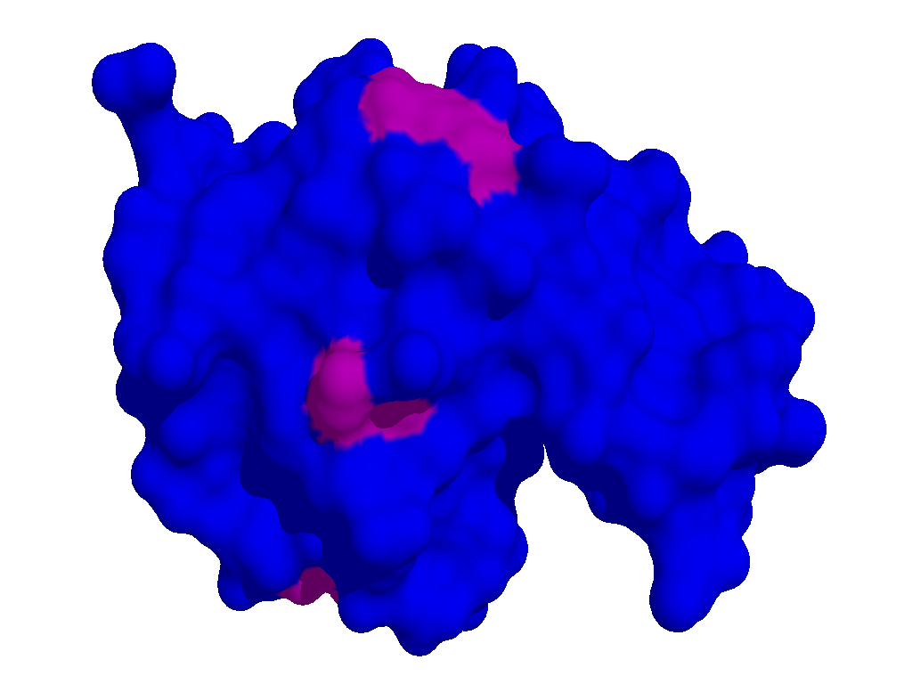
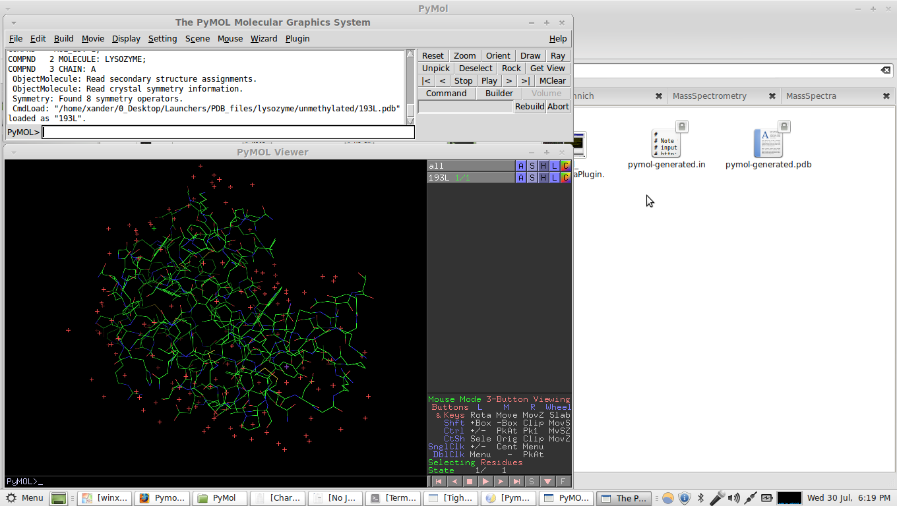
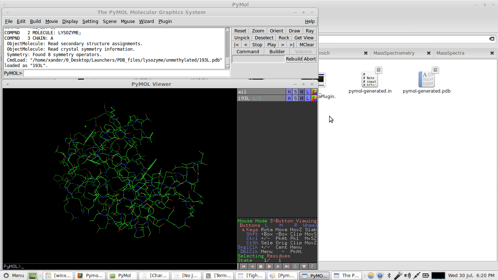
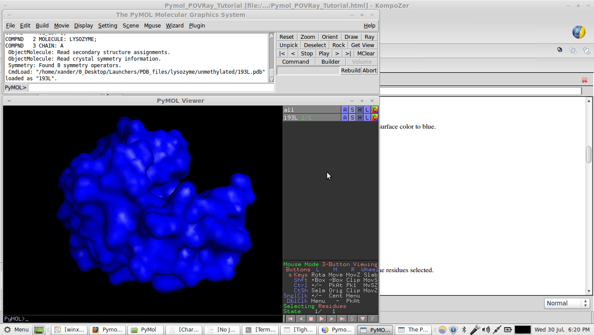
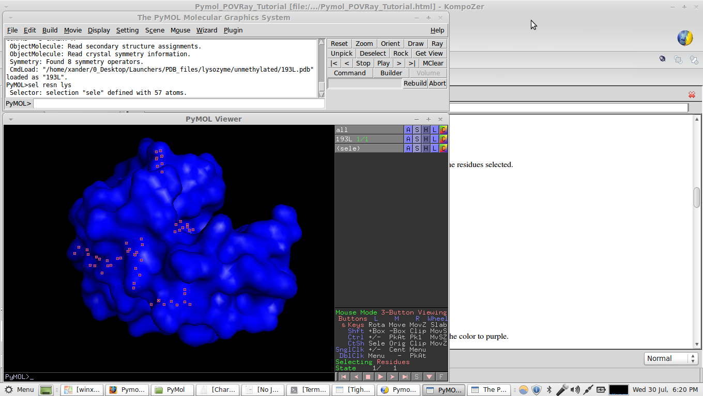
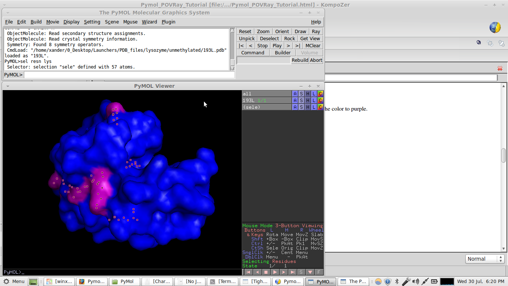
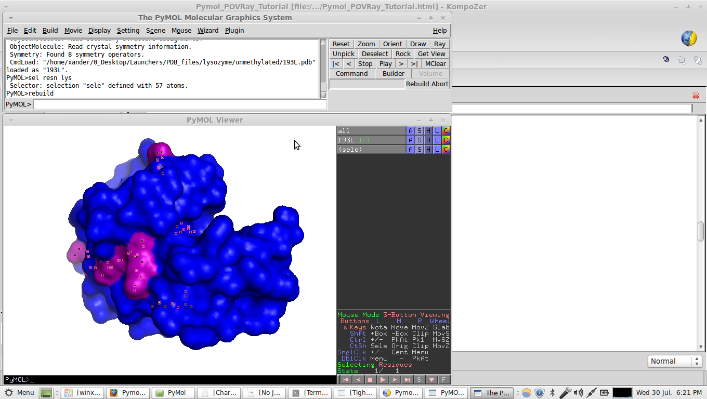
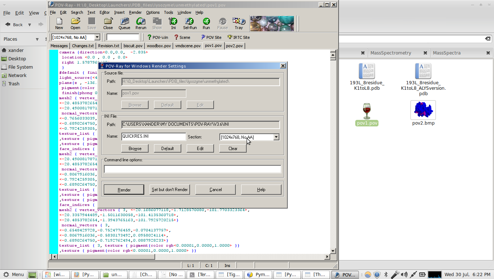

PyMol and POVRay raytracing:
Objective: Display a "surf" (molecular surface) of 193L (hen egg white
lysozyme) in blue with all lysine residues displayed in purple. The
product should look like:

Tutorial:
1. First load up pymol and import PDB 193L.

2. Remove the bound waters. Click on the "H" button and then select hide waters.

3. Now click on the "S" button and select surface. Then click the "C" button and change the surface color to blue.

4. In the pymol command line, type "sel resn lys" this will create a new selection with all lysine residues selected.

5. Now, with the residues still selected, click on the "C" button for that selection and change the color to purple.

6. Go to the menu bar --> Display --> Background -->White
7. Now change the display quality. Again go to Display --> Quality --> Maximum Quality

8. Now its time to save the image as a POVRay file. Go to
File-->SaveImageAs-->POV-Ray. Save with any filename you desire
(example: povfile.pov).
9. Hopefully you have a windows version of POVRay installed. I am
working in linux. Fortunately wine for linux does a really good job of
running POVRay for windows in linux :)>
10. Find the povfile.pov and open it using POVRay. If windows doesn't
automatically find the right executable to open the file with, look for
pvengine.exe in the pov-ray installation folder in C:\ProgramFiles. If
using wine and linux, the same executable (which opens a GUI interface
for using POV-ray) can be found in the
/home/username/.wine/drive_c/Program Files/POV-Ray for Windows
v3.62/bin/ folder as pvengine.exe. As you can see, I am using POV-ray v
3.62.
11. Again, open the povfile.pov with the pvengine.exe
12. Now click the "Ini" button.

13. Choose the desired resolution for the image, then click "Render". Below is the full sized 1024x768 image I rendered.
14. The rendered image will be saved as a bitmap file (.bmp) in the
same directory as the povfile.pov. You have completed the tutorial!
Note that my structure looks different from the one done in the
tutorial because I used a previously generated povfile.pov. :)>